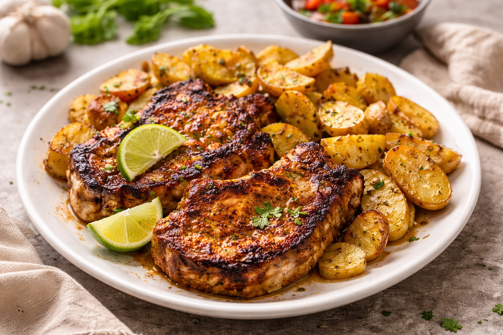

Pasta facíl y rapida
Si llegás a casa después de un día largo y necesitás una comida rápida pero que se sienta especial, una pasta cremosa con panceta, ajo y parmesano es la aliada perfecta. Con pocos ingredientes y en menos de media hora, podés servir un plato simple, sabroso y lo suficientemente elegante como para compartir sin complicaciones.
Ver receta
Chuletas marinadas
Cuando el plan es un almuerzo de domingo o una reunión donde el plato principal tiene que rendir y lucirse, las chuletas marinadas al tequila con papas especiadas son una excelente opción. Es una receta abundante, con sabores intensos y un toque distinto, ideal para sentarse a la mesa sin apuro y disfrutar de algo fuera de lo habitual.
Ver receta
Verduras salteadas
Y si buscás algo más liviano, diferente o pensado para quienes prefieren no comer carne, un salteado de vegetales asados con quinoa y hierbas frescas puede ser la elección justa. Es una receta colorida, nutritiva y llena de sabor, perfecta para un almuerzo fresco o una cena liviana que sorprende incluso a los paladares más clásicos.
Ver receta